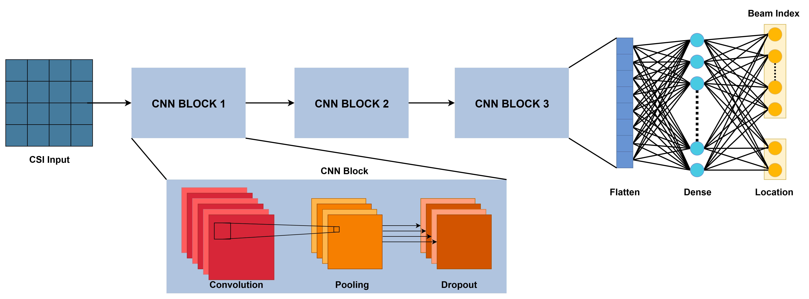
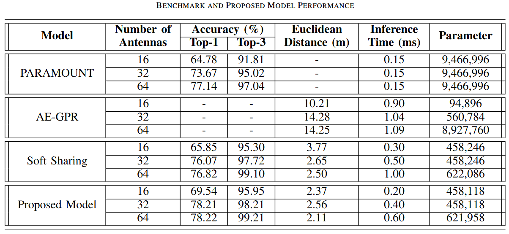

In this project, I developed a multitask deep learning model that performs beamforming selection and user localization simultaneously, inspired by Integrated Sensing and Communication (ISAC) for future 6G networks. The model uses a Convolutional Neural Network to extract features from Channel State Information (CSI) and a shared network head to output both the optimal beam index and estimated user position.
This work demonstrates how multitask learning can significantly improve efficiency and performance in ISAC systems, contributing to practical 6G wireless deployment strategies.

CNN Structure

Benchmark Performance